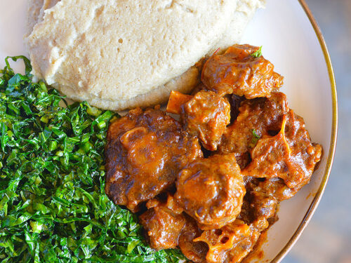
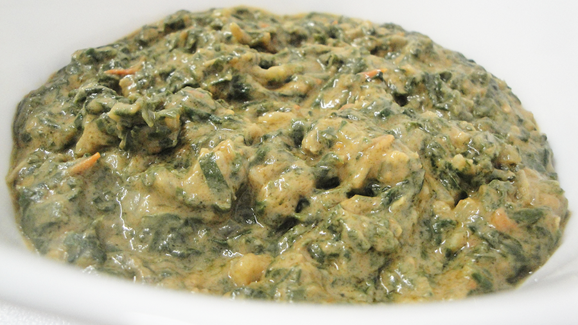
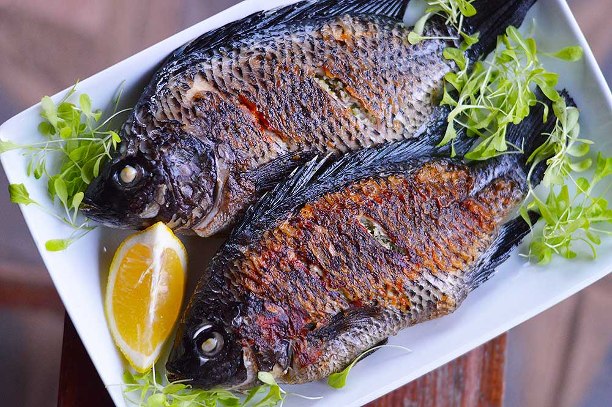
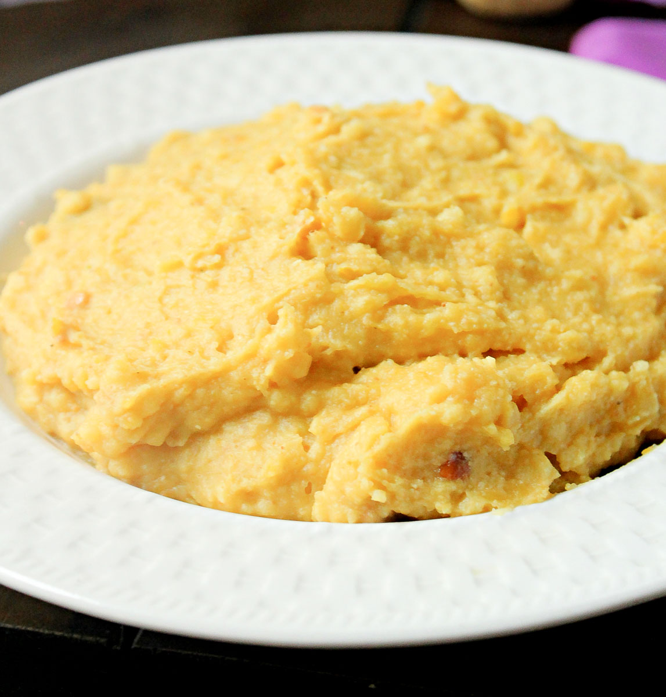

Food Gallery

Sadza Stew

Greens & Dovi

Kariba Bream

Peri-Peri Chicken
Fat Cakes

Nhopi
A cultural food project by Austin Kudoma showcasing authentic Zimbabwean meals, traditional cooking methods, and local culinary heritage.
"This project was created by Austin Kudoma to celebrate Zimbabwean food culture through modern web development."
Food in Zimbabwe is more than sustenance — it is community, ceremony, and identity. Meals are shared, stories are told, and heritage is passed down through every recipe.
Traditional Zimbabwean cooking over wood fires imparts a distinctive smoky depth to dishes that modern stoves cannot replicate. The fire is central to communal meals.
Sadza, made from maize meal, is the cornerstone of Zimbabwean cuisine. No meal is truly complete without it — it anchors the plate and the culture alike.
Meals are traditionally shared from a common pot, reinforcing bonds of family and community. The act of eating together is an expression of ubuntu.
Covo, rape, and wild spinach are foraged and cultivated across the country. These leafy greens, cooked with peanut butter, are a nutritional powerhouse.
Weddings, funerals, and harvest festivals centre on food. Whole roasted goat and communal sadza signal occasions of joy and remembrance.
From Kariba's freshwater fish to Bulawayo's street food culture, each region of Zimbabwe brings its own flavour and culinary identity to the table.




This project was built by Austin Kudoma as a celebration of Zimbabwean food culture
through modern web development. The recipes, stories, and ingredients collected here
represent a living archive of Zimbabwe's culinary identity — passed down through
generations and brought into the digital age.
Each recipe is documented with care for both authenticity and accessibility,
so that Zimbabweans everywhere — and the curious worldwide — can cook, learn, and connect
with this rich heritage.
Have a recipe to share, feedback, or just want to connect?